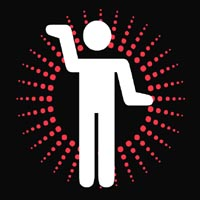

| | username // |
blunoize
| | real name // |
james and brian Kilby & Mackellar
| | picture // |

| | blurb // |
We present a radio show on Blue Mountains Community Radio 2BLU FM 89.1.
We have been presenting our radio show for 1 year.
Our show focuses on local electronic and rock music. As part of the Radioworks project we organised the 'Nice Noize Demo Competition' .
This was so successful that we decided to put on a gig with the 8 best entries and to record this live and use these recordings as the basis to produce 4 radio programs about 4 of the artists.
James and Brian's radio program is being broadcast on community radio as part of noise and Amrap's community radio project. You can catch x's programs on 2BLU FM in New South Wales, as well as on the community radio satellite network.
| | web address // |
www.2blu.cjb.net
| | age // | 27
| | creative stuff // |
| | email // |
email james and brian
|
|
|